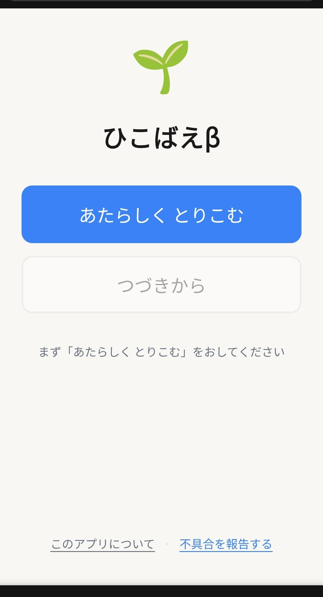
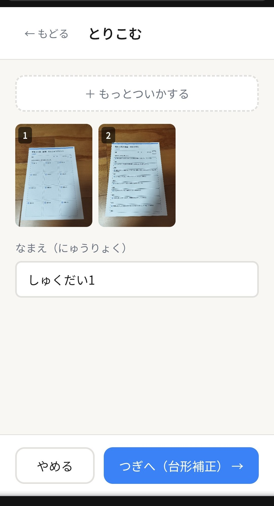
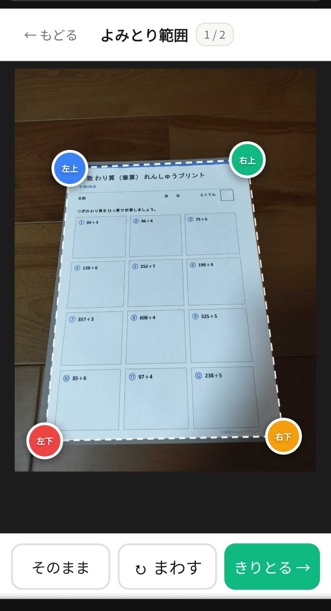
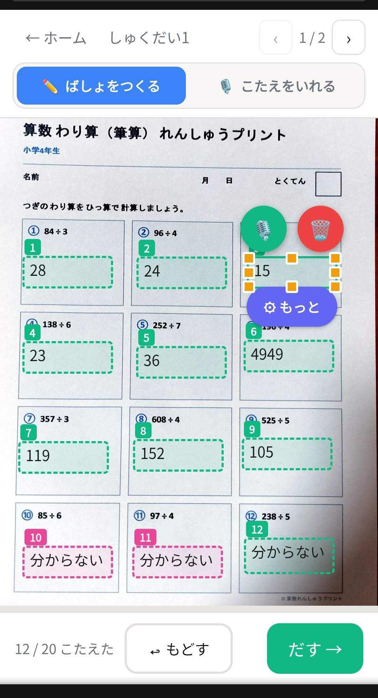
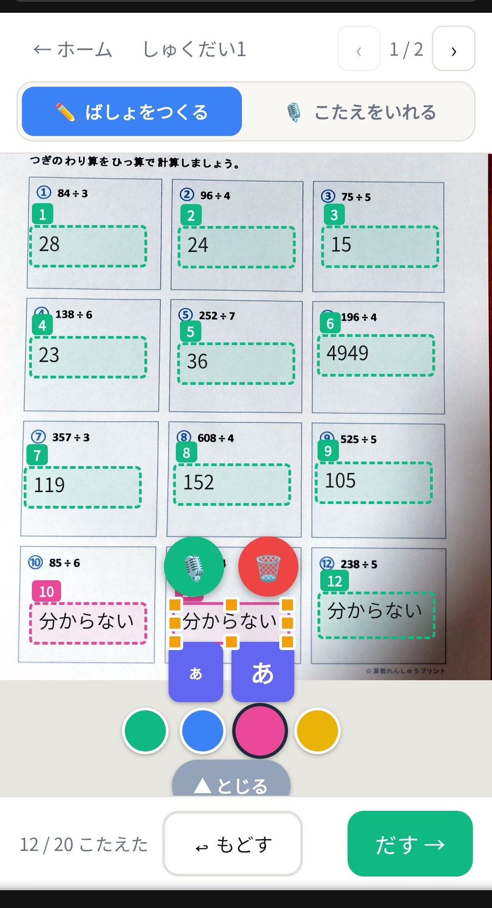
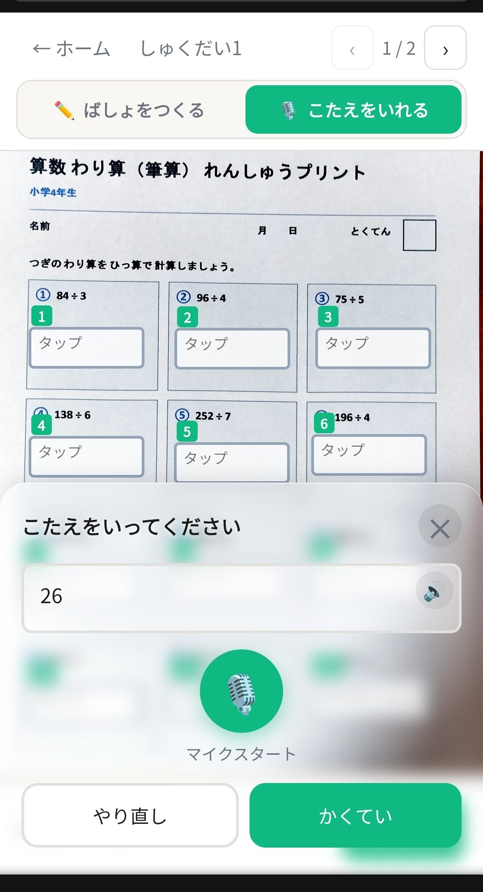
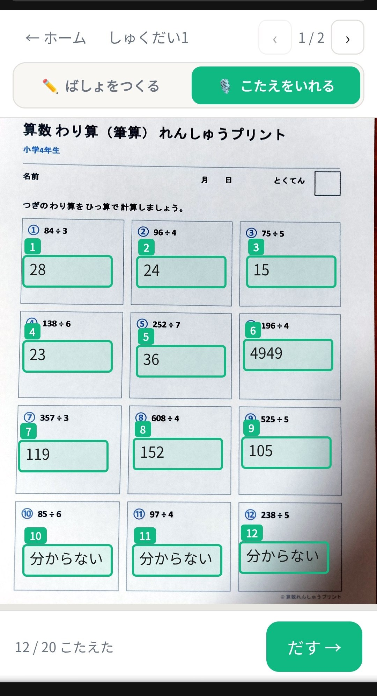
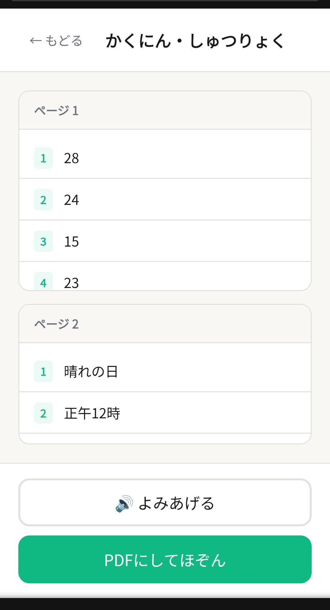
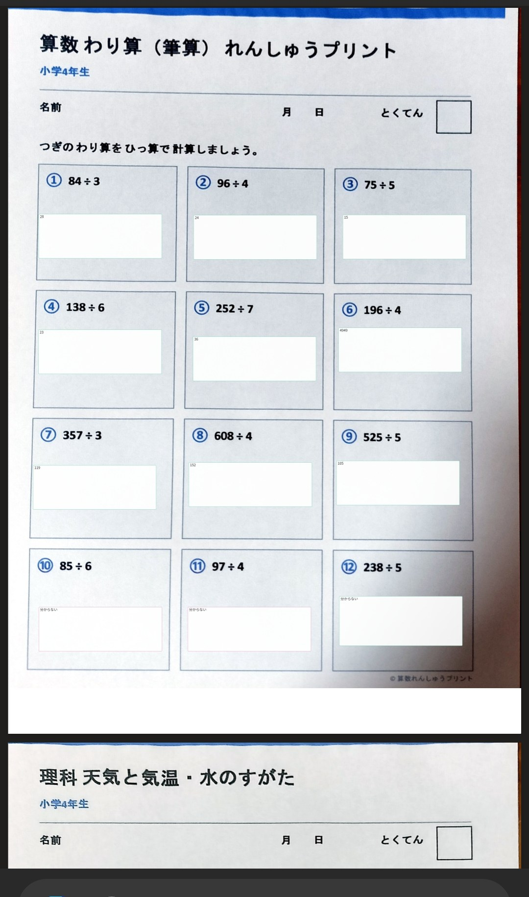

書くことが苦手なお子さんが、問題用紙を「撮って・声で答えて・PDFで提出」できる学習支援アプリです。このページでは、はじめての方でも迷わないように、操作の流れをひとつずつ画面つきで説明します。
ひこばえを使ってみる →インストール不要。ブラウザで開くだけで使えます。
ブラウザで hikobae.we-re.net を開きます。最初の画面で 「あたらしく とりこむ」 をおして始めます。

点線の枠をタップすると、カメラ撮影か写真の選択ができます。対応形式は JPEG・PNG・PDF。複数枚・複数ページもまとめて取り込めます。

用紙の四すみを、4色の丸（左上＝青・右上＝緑・右下＝オレンジ・左下＝赤）に合わせます。多くの場合、かどは自動で検出されるので、ずれていたらドラッグで微調整するだけです。

上のバーで ✏️ ばしょをつくる を選びます。答えを書きたい場所をタップすると解答欄ができます。ドラッグで移動、四すみ・辺の□でサイズ変更ができます。

「⚙ もっと」を開くと、文字サイズのボタン（ぁ＝小さく／あ＝大きく）と、4色のカラーパレットが出ます。問題ごとに色分けすると見やすくなります。

上のバーで 🎙️ こたえをいれる を選ぶと、解答欄に「タップ」と表示されます。答えたい欄をタップすると、音声入力の画面が開きます。

答えた数は下に「12 / 20 こたえた」のように表示されます。全部入れ終わると 「◎ ぜんぶ こたえた！」 のお祝いが出ます。入力中は自動で保存されるので、途中でやめても大丈夫です。

確認画面では、ページごとに答えの一覧が見られます。内容をチェックして、最後に PDFにしてほぞん をおすと、用紙の画像に答えが重なったPDFがダウンロードされます。

こうして、元の問題用紙のレイアウトはそのままに、答えだけがきれいに入ったPDFができあがります。書くのが苦手でも、「考えること」に集中して提出できます。

使うまえに知っておくと安心なこと。
画像も答えもすべて端末の中だけに保存され、どこにも送信されません。ブラウザのデータを消すと完全に削除されます。
取り込み後はオフラインでも動作します。サーバー通信はゼロの設計です。
音声入力は Chrome・Edge が安定。マイクの許可を確認し、難しければ「✏ 手入力」を使ってください。
配置モードの「もどす」で最大20回やり直せます。解答欄は🗑で削除、内容は何度でも入れ直せます。
スマホ・タブレット・パソコンに対応。保護者や先生が代わりに操作してもOKです。
ホーム下の「不具合を報告する」または GitHub Issues からご連絡ください。